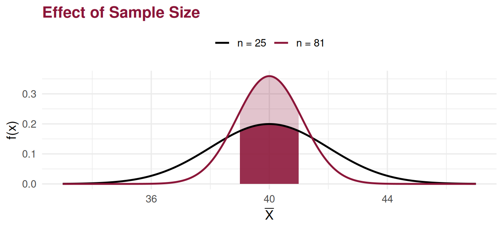
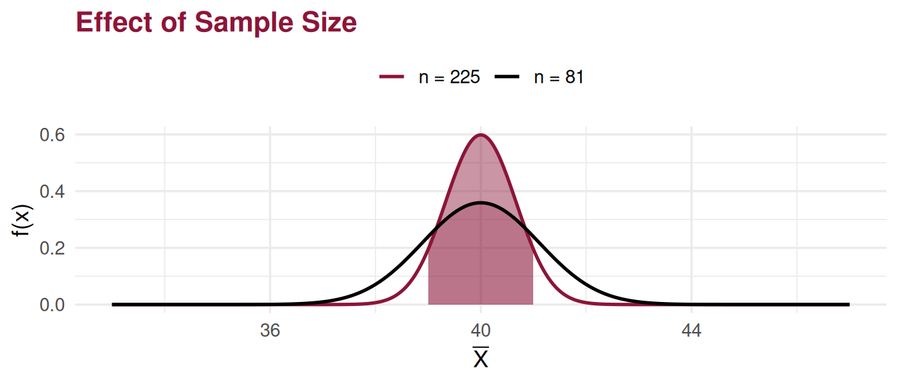
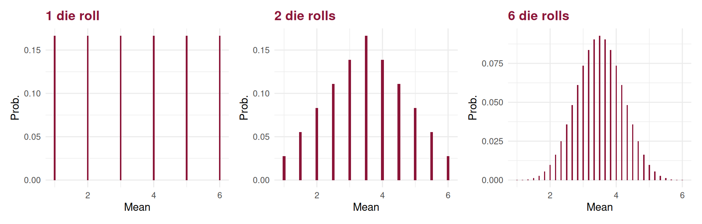

Central Limit Theorem
Statistics II
Additivity (Normal Distribution)
Additivity (Normal Distribution):
If:
\(X_i \sim Normal(\mu,\sigma)\), \(i = 1,\ldots,n\) — independent and identically distributed random variables
\(T = X_1 + \ldots + X_n\) and \(\bar{X} = \dfrac{T}{n}\)
then:
\[T \sim Normal\!\left(\mu_T = n \times \mu,\sigma_T = \sqrt{n} \times \sigma\right)\]
\[\bar{X} \sim Normal\!\left(\mu_{\bar{X}} = \mu,\sigma_{\bar{X}} = \frac{\sigma}{\sqrt{n}}\right)\]
Example 1
Consider:
Independent variables: \(X_i \sim Normal(\mu_i = 40,\sigma_i = 10)\)
\(X_i\) — lunch duration of student \(i\) (in minutes)
\(\bar{X} = \dfrac{1}{n}(X_1 + \ldots + X_n)\) — sample mean (\(n = 25\) and \(n = 81\) students)
Find the probability that the sample mean lies between 39 and 41 minutes.
Solution: (assuming Normal distribution)
\[\bar{X} \sim Normal\!\left(\mu_{\bar{X}} = 40,\sigma_{\bar{X}} = \frac{10}{\sqrt{n}}\right)\]
\[\Rightarrow P\!\left(39 < \bar{X} \leq 41\right) = P\!\left(\frac{39-40}{\tfrac{10}{\sqrt{n}}} < Z \leq \frac{41-40}{\tfrac{10}{\sqrt{n}}}\right)\]
Example 1 — Solution (cont.)
\(P(39 < \bar{X} \leq 41) =\)
\(n = 25\): \(= P(-0.5 < Z \leq 0.5) = \Phi(0.5) - \Phi(-0.5) = \mathbf{0.3829}\)
\(n = 81\): \(= P(-0.9 < Z \leq 0.9) = \Phi(0.9) - \Phi(-0.9) = \mathbf{0.6319}\)
Comment: As sample size increases, the probability that the sample observations concentrate around the mean also increases.
Central Limit Theorem (CLT)
Central Limit Theorem (CLT):
If:
\(X_i \sim \textit{Distribution}(\mu,\sigma)\), \(i = 1,\ldots,n\) — independent and identically distributed random variables
\(T = X_1 + \ldots + X_n\), \(\quad \bar{X} = \dfrac{T}{n}\)
then, for \(n\) sufficiently large (as a rule, \(n \geq 30\)):
\[T \;\dot{\sim}\; Normal\!\left(\mu_T = n \times \mu,\sigma_T = \sqrt{n} \times \sigma\right)\]
\[\bar{X} \;\dot{\sim}\; Normal\!\left(\mu_{\bar{X}} = \mu,\sigma_{\bar{X}} = \frac{\sigma}{\sqrt{n}}\right)\]
Example 1 — Revisited (CLT)
Consider:
Independent variables: \(X_i \sim \textit{Distribution}(\mu_i = 40,\sigma_i = 10)\)
\(X_i\) — lunch duration of student \(i\) (in minutes)
\(\bar{X} = \dfrac{1}{n}(X_1 + \ldots + X_n)\) — sample mean
\(n = 25,\; n = 81,\; n = 225\) students
Find \(P(39 < \bar{X} \leq 41)\). Solution: (without the assumption of normality)
With \(\mathbf{n \geq 30}\):
\[\bar{X} \;\dot{\sim}\; Normal\!\left(\mu_{\bar{X}} = 40,\sigma_{\bar{X}} = \frac{10}{\sqrt{n}}\right) \quad \xrightarrow{CLT}\]
\[\Rightarrow P(39 < \bar{X} \leq 41) \approx P\!\left(\frac{39-40}{\tfrac{10}{\sqrt{n}}} < Z \leq \frac{41-40}{\tfrac{10}{\sqrt{n}}}\right) =\]
Example 1 — Revisited (cont.)
\(P(39 < \bar{X} \leq 41) \rightarrow (CLT)\)
\(n = 25\): insufficient information for reliable calculations (\(n < 30\))
\(n = 81\): \(P(-0.9 < Z \leq 0.9) = \Phi(0.9) - \Phi(-0.9) = \mathbf{0.6319}\)
\(n = 225\): \(P(-1.5 < Z \leq 1.5) = \Phi(1.5) - \Phi(-1.5) = \mathbf{0.8664}\)

Comment: The probability that observations concentrate around the mean increased with the larger sample (\(n = 225\)).
Example 2
Consider the independent variables:
\(X_i\) — number of points on the \(i\)-th roll of a die :game_die:
Find: \(P(2.5 < \bar{X} < 3.5)\) for \(n = 1,\; n = 2,\; n = 36\) rolls.
Solution:
\(n = 1\): \(= P(X_1 = 3) = \dfrac{1}{6}\)
\(n = 2\):
\(= P(X_1=1,\,X_2=5) + P(X_1=2,\,X_2=4) + P(X_1=3,\,X_2=3)\) \(+ P(X_1=4,\,X_2=2) + \ldots + P(X_1=5,\,X_2=1) = \dfrac{5}{36}\)
Example 2 — Solution (cont.)
\(n = 36\) (CLT): note that for a fair die \(\mu = 3.5\) and \(\sigma = 1.7078\)
\[= P\!\left(\frac{2.5 - 3.5}{\tfrac{1.7078}{\sqrt{36}}} < Z < \frac{3.5 - 3.5}{\tfrac{1.7078}{\sqrt{36}}}\right) = \Phi(0) - \Phi(-3.51) = 0.4998\]
Example 2 — Solution (cont.)

Comments:
- The plots illustrate convergence towards the Normal distribution.
- The variable is discrete — see the continuity correction ahead.
Corollaries of the CLT
Corollary 1
Let \(X\) be a random variable with a Binomial distribution with parameters \(n\) and \(p\), \(X \sim binomial(n,p)\). If \(n \geq 30\), \(np > 5\) or \(n(1-p) > 5\), then:
\[X \;\underset{CLT}{\dot{\sim}}\; Normal\!\left(\mu = np,\;\sigma = \sqrt{npq}\right) \;\Leftrightarrow\; Z_n = \frac{X - np}{\sqrt{npq}} \;\underset{CLT}{\dot{\sim}}\; Normal(0,1)\]
Corollary 2
Let \(X\) be a random variable with a Poisson distribution with parameter \(\lambda\), \(X \sim Poisson(\lambda)\). In practice, if \(\lambda > 20\), then:
\[X \;\underset{CLT}{\dot{\sim}}\; Normal\!\left(\mu = \lambda,\;\sigma = \sqrt{\lambda}\right) \;\Leftrightarrow\; Z_n = \frac{X - \lambda}{\sqrt{\lambda}} \;\underset{CLT}{\dot{\sim}}\; Normal(0,1)\]
Continuity Correction
Note
Note: In both corollaries, we are approximating the distribution of a discrete random variable with a continuous (Normal) distribution. The continuity correction should therefore be applied:
\[[F(x)]_{\text{Discrete}} \approx [F(x + 0.5)]_{\text{Normal}}\]
Example: \(X \sim Poisson(\lambda = 30)\)
Exact probability: \(P(X = 40) = 0.01394\)
Without correction: \(P\!\left(Z = \dfrac{40-30}{\sqrt{30}}\right) = 0\) — unusable!
With continuity correction:
\[P(X = 40) = P(39.5 \leq X \leq 40.5) \approx P\!\left(\frac{39.5-30}{\sqrt{30}} \leq Z \leq \frac{40.5-30}{\sqrt{30}}\right)\]
\[= \Phi(1.92) - \Phi(1.73) = 0.9726 - 0.9582 = \mathbf{0.01444}\]
Continuity Correction — Other Cases
Remaining cases (discrete \(X\), applying continuity correction):
\[P(X < 40) = P(X \leq 39) = P(X \leq 39.5) \approx \cdots\]
\[P(X > 40) = P(X \geq 41) = P(X \geq 40.5) \approx \cdots\]
\[P(35 < X < 40) = P(36 \leq X \leq 39) = P(35.5 \leq X \leq 39.5) \approx \cdots\]
\[P(35 \leq X < 40) = P(35 \leq X \leq 39) = P(34.5 \leq X \leq 39.5) \approx \cdots\]
Example 3
Consider:
Independent variables: \(X_i \sim binomial(n_i = 1\;;\;p = 0.05)\)
\(X_i = 1\) if a tax return contains errors (otherwise \(X_i = 0\))
Consider an inspection of a sample of \(n = 1000\) tax returns.
Find the probability that there are at least 60 incorrect returns.
Solution: (exact and approximate distributions)
Exact distribution:
\(T \sim binomial(n = 1000\;;\;p = 0.05)\) — by the additivity of the Binomial
\[P(T \geq 60) = 1 - P(T < 60) = 1 - P(T \leq 59) = \mathbf{0.0867}\]
Example 3 — Approximate Solution
Approximate distribution (exact and approximate):
\[\mu = n_i p = 1 \times 0.05 \qquad \sigma = \sqrt{n_i p(1-p)} = \sqrt{1 \times 0.05 \times 0.95} = \sqrt{0.0475}\]
\[T \;\dot{\sim}\; Normal\!\left(\mu_T = 1000 \times 0.05\;;\;\sigma_T = \sqrt{1000} \times \sqrt{0.0475}\right)\]
Applying the continuity correction:
\[P(T \geq 60) \;\underset{\text{cont. corr.}}{=}\; P(T \geq 59.5) = 1 - P(T < 59.5)\]
\[\underset{CLT}{\approx} 1 - P\!\left(Z \leq \frac{59.5 - 50}{6.89}\right) = 1 - \Phi(1.38) = \mathbf{0.0838}\]
Comment: The variable is discrete, so we applied a continuity correction.
Example 4 [Exercise 1]
Consider: \(T \sim Poisson(\lambda_T = 30)\)
\(T\) = number of daily accesses to a website
Find \(P(T > 40)\).
Solution: (exact and approximate distributions)
Exact distribution:
\[P(T > 40) = 1 - P(T \leq 40) = 0.0323 \simeq 0.03\]
Note: Since this is a homogeneous Poisson process, the day can be viewed as a sum of \(n\) sub-periods, each with the same probability distribution.
Example 4 — Approximate Solution
Approximate distribution:
\(T = X_1 + \ldots + X_n\) (by additivity), where \(X_i \sim Poisson\!\left(\lambda = \dfrac{30}{n}\right)\)
\[T \sim Poisson(\lambda = 30) \;\Rightarrow\; T \;\underset{CLT}{\dot{\sim}}\; Normal\!\left(\mu = \lambda = 30,\;\sigma = \sqrt{\lambda} = \sqrt{30}\right)\]
Applying the continuity correction:
\[P(T > 40) \;\underset{\text{cont. corr.}}{=}\; P(T \geq 40.5) \;\underset{CLT}{\approx}\; P\!\left(Z \geq \frac{40.5 - 30}{\sqrt{30}}\right) = P(Z \geq 1.92)\]
\[= 1 - \Phi(1.92) = 1 - 0.9726 = \mathbf{0.0274}\]
Approximation error: \(\varepsilon = |0.0323 - 0.0274| = 0.0049\)